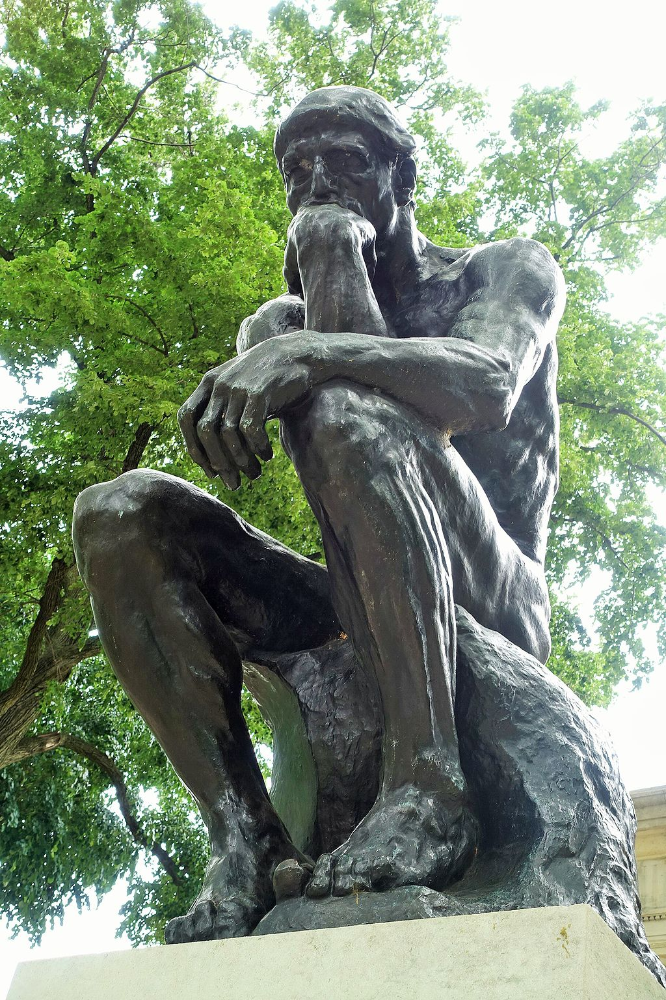

<head>
<meta charset="UTF-8" />
<meta name="keywords" content="drawing, painting" />
<meta name="description" content="drawings by Sunjy" />
<title>Sunjy</title>
<link rel="shortcut icon" type="image/x-icon" href="../../mImages/mCommon/favicon.ico" media="screen" />
<link rel="stylesheet" type="text/css" href="../../mCsses/mCommon/mCssA.css" />
<link rel="stylesheet" type="text/css" href="../../mCsses/mCommon/mCssB.css" />
<link rel="stylesheet" type="text/css" href="../../mCsses/mCommon/mCssC.css" />
<link rel="stylesheet" type="text/css" href="../../mCsses/mCommon/mCssD.css" />
<link rel="stylesheet" type="text/css" href="../../mCsses/mContent/mCssA.css" />
<link rel="stylesheet" type="text/css" href="../../mCsses/mContent/mCssB.css" />
<link rel="stylesheet" type="text/css" href="../../mCsses/mContent/mCssC.css" />
<link rel="stylesheet" type="text/css" href="../../mCsses/mContent/mCssD.css" />
</head>
<script type="text/javascript" src="../../mScripts/mContent/mContentAA.js" /></script>
<script type="text/javascript" src="../../mScripts/mContent/mContentAB.js" /></script>
<script type="text/javascript" src="../../mScripts/mContent/mContentAC.js" /></script>
<script type="text/javascript" src="../../mScripts/mContent/mContentAD.js" /></script>
<script type="text/javascript"></script> 
<script type="text/javascript">
document.write('<div class="mImgAbsolute"></div>');
/*
document.write('<p class="mFontSizeBColor" />From a white paper...</p>');
document.write('<table class="center"><tr><td>');
document.write('');
document.write('</td></tr></table>');
*/
</script>


<script type="text/javascript">
document.write('<p class="mFontSizeBColor" />The Thinker</p>');
document.write('<p class="mFontSizeSColor" />“The Thinker” by Auguste Rodin was initially conceived for his monumental bronze portal entitled “The Gates of Hell” (1880-1917).  <br><br>The figure was intended to represent Italian poet Dante pondering “The Divine Comedy,” his epic classic of Paradise and Inferno. Initially, this masterpiece had several other names, including “The Poet.”<br><br>In 1889, Rodin exhibited the sculpture independently of “The Gates of Hell,” giving it the title “The Thinker,” and in 1902, he embarked on this larger version. It has since become one of his most recognized masterpieces.<br><br>There are various castings of the sculptures of “The Thinker” around the world. They are all usually placed on a stone pedestal.<br><br>The nude male figure sitting on a rock with his chin resting on one hand, deep in thought, is often used as an image to represent philosophy.<br><br>There are about 28 of the large or full-size castings, in which the figure is about 186 centimeters (73 in) high, though not all were made during Rodin’s lifetime or under his supervision.<br></p>');
document.write('<table class="center" /><tr><td>');
document.write('<br>The figure was intended to represent Italian poet Dante pondering “The Divine Comedy,” his epic classic of Paradise and Inferno. Initially, this masterpiece had several other names, including “The Poet.”<br><br>In 1889, Rodin exhibited the sculpture independently of “The Gates of Hell,” giving it the title “The Thinker,” and in 1902, he embarked on this larger version. It has since become one of his most recognized masterpieces.<br><br>There are various castings of the sculptures of “The Thinker” around the world. They are all usually placed on a stone pedestal.<br><br>The nude male figure sitting on a rock with his chin resting on one hand, deep in thought, is often used as an image to represent philosophy.<br><br>There are about 28 of the large or full-size castings, in which the figure is about 186 centimeters (73 in) high, though not all were made during Rodin’s lifetime or under his supervision.<br>" />');
document.write('</td></tr></table>');
</script>


